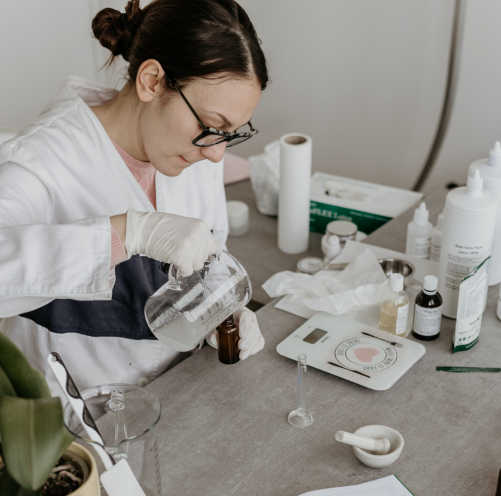
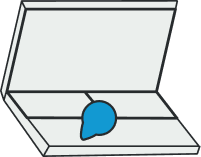

Wired Beauty is a new data driven market research company dedicated to cosmetic laboratories.
Our Concept
We help our clients evaluate and develop skincare formulae by comparing cosmetics on statistically viable samples of women & men up to 1000 people:
- The antioxydative and moisturizing effect of formulae
- The antioxydative and moisturizing effect of ingredients
- Consumer feedback after product use
- Environmental conditions, UV pollution, surrounding the consumer’s lifestyle
- Skincare performance after 1 day – 8 days – 15 days - X days.

Our products

PORTABLE LAB DEVICE
Send the datas from the patches to the mobile app.
PATCHES
They analyse the datas of the skin.
MOBILE APP
Ask feedbacks and lifestyle data to understand the skin.
EUROPEAN DATA CENTER
Store datas for our clients.
Data & Technology
- Easy multilingual smartphone app and customer feedback.
- Read simultaneously skin response & consumer feed-back.
- Geolocalisation and exposome data.
- Proprietary nomadic lab devic
- Skin patches to decipher skin reactions and ingredient presence.
- Repeatability of protocols in real life conditions, such as bathrooms.
- Saas and European data center.
- Combining efforts with countries usual CRO’s.
- In all countries, even in China where anonymized data is key.